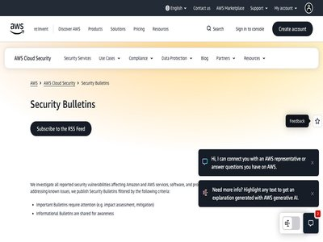

August 10, 2026 · 4 articles

How to report an AI Act violation in the EU
August 10, 2026
The EU’s fight to regulate AI models entered a new chapter on 2 August 2026, when the European Commission’s AI Office and national authorities began enforcing the AI Act. The AI... (Help Net Security)

Advertisers are trying to influence AI bots with secret ads
August 10, 2026
PLUS: Hiveminds are emerging to hack the planet, and open-weight models are the new new red scare. (The Register - Security)

Risky Bulletin: Pwnie Awards 2026 winners
August 10, 2026
In other news: Metabase zero-day used in data theft attacks; Russian hackers disrupted a second power plant in Poland; two US law firms pay mega ransoms. (Risky Business News)

ISC Stormcast For Monday, August 10th, 2026 https://isc.sans.edu/podcastdetail/10044, (Mon, Aug 10th)
August 10, 2026
(SANS ISC)
August 09, 2026 · 5 articles

SECURITY AFFAIRS MALWARE NEWSLETTER ROUND 109
August 09, 2026
Security Affairs Malware newsletter includes a collection of the best articles and research on malware in the international landscape Malware Newsletter Fake Xeno Roblox Cheats... (Security Affairs)
U.S. Defense Manufacturer IEH Hit by Phishing Attack, Exposing Potentially Export-Controlled Data
August 09, 2026
IEH was breached by a phishing attack that exposed its Microsoft 365 inbox, including emails and potentially export-controlled military data. IEH Corporation is a U.S. defense a... (Security Affairs)
Ransomware gangs skip the CEO, head straight for the 40-something IT manager
August 09, 2026
Gen Xers who feel triggered by this should remember to unplug the network cable and call the cops (The Register - Security)
Webmail CSS Attacks Expose a New Risk for AI-Powered Email Tools
August 09, 2026
CSS attacks on major webmail services can steal credentials, hijack sessions and manipulate AI tools connected to users’ inboxes. PortSwigger researcher Gareth Heyes demonstrate... (Security Affairs)
Week in review: Cisco fixes IMC bug, Patch Tuesday forecast, Black Hat USA 2026
August 09, 2026
Here’s an overview of some of last week’s most interesting news, articles, interviews and videos: Mapping the malware blast radius a single alert won’t show you In this intervie... (Help Net Security)
August 08, 2026 · 9 articles
Palo Alto Networks Faces China Cybersecurity Review Amid Rising Tech Tensions
August 08, 2026
China opened a cybersecurity review of Palo Alto Networks, citing national security concerns but giving no details about the reasons behind the probe. China’s Cyberspace Adminis... (Security Affairs)
Metabase Zero-Day Exploited in the Wild, Exposing Admin Access and Sensitive Data
August 08, 2026
Attackers exploited a CVSS 10 Metabase zero-day to gain admin access and steal sensitive data. Framework confirmed it was among the victims. Metabase just confirmed something no... (Security Affairs)

Critical One-Click Vulnerability in Atlassian’s Rovo AI Exposed Enterprise Data
August 08, 2026
The RovoBlast attack method identified by Varonis researchers could have been exploited to steal Confluence, Jira and SharePoint data. The post Critical One-Click Vulnerability... (SecurityWeek)

Progress Kemp LoadMaster Flaw Hits CISA KEV After 792 Reported Exploit Attempts
August 08, 2026
The U.S. Cybersecurity and Infrastructure Security Agency (CISA) on Friday added a critical-severity security flaw impacting Progress Kemp LoadMaster to its Known Exploited Vuln... (The Hacker News)

Hackers breach TrueConf to trojanize client installers with backdoors
August 08, 2026
The Head Mare hacktivist group has been exploiting vulnerabilities in unpatched TrueConf video conferencing servers to replace client installers with malicious versions that del... (BleepingComputer)
Devs to Anthropic, OpenAI, Cursor, and friends: Make security and privacy the default
August 08, 2026
Researchers scour social media to measure developer concerns about AI coding tools (The Register - Security)
New CSS Attacks Can Break Webmail Defenses to Steal Passwords and Tokens
August 08, 2026
New research shows content inside an email can escape its message boundary and interfere with the webmail interface. Across attack chains spanning Outlook, Gmail, Fastmail, Prot... (The Hacker News)
Unlimited Technology Systems Data Breach Exposes Data of 3.8 Million Healthcare Patients
August 08, 2026
Hackers stole personal, medical, and insurance data of 3.8 million people from Unlimited Technology Systems’ data center. Unlimited Technology Systems disclosed a data breach af... (Security Affairs)
N-able Issues N-central Hotfix 2 as Attackers Reach Managed Systems and Persist
August 08, 2026
N-able has released a fresh round of hotfixes for N‑central as part of its investigation into ongoing exploitation of a recently disclosed security flaw in the Remote Monitoring... (The Hacker News)
August 07, 2026 · 58 articles
ClickFix Attacks Deliver macOS Stealer That Can Drain Crypto Wallets
August 07, 2026
ClickFix-style attacks are being used to deliver a Go-based malware capable of stealing cryptocurrency assets, as well as browser-stored passwords, Apple iCloud Keychain data, a... (The Hacker News)
Hackers Impersonate IT Support to Breach Leading Financial Companies
August 07, 2026
Hackers used fake IT help desks to steal MFA credentials, targeting over 200 firms, including major financial companies. A hacking campaign operating under names including Redac... (Security Affairs)

Rapid7 Analysis: Unauthenticated Remote Code Execution in JetBrains TeamCity (CVE-2026-63077)
August 07, 2026
Overview On July 27, 2026, JetBrains published a security advisory for CVE-2026-63077 , a critical unsafe deserialization vulnerability affecting JetBrains TeamCity . An attacke... (Rapid7 Blog)
New WordPress Pre-Auth XSS Could Lead to PHP Code Execution - Patch ASAP
August 07, 2026
WordPress has fixed a pre-authentication reflected cross-site scripting (XSS) flaw in its login screen that affects every version of the content management system. pwn.ai demons... (The Hacker News)
Microsoft, Apple Release Fresh Security Updates
August 07, 2026
Microsoft fixed critical vulnerabilities across Azure, Entra, and SharePoint, while Apple patched a high-severity authentication bypass. The post Microsoft, Apple Release Fresh... (SecurityWeek)
TeamPCP Linked To Redis Attacks Dating Back To 2020 And Later Supply Chain Campaign
August 07, 2026
A new analysis has uncovered that the threat actor tracked as TeamPCP has been active on the cybercrime scene as far back as 2020, indicating the group has been compromising int... (The Hacker News)
18-Year-Old Linux SCTP Flaw Could Let Local Users Gain Root and Escape Containers
August 07, 2026
A use-after-free bug in Linux's SCTP networking code can be turned into full root on a host, and Tencent researchers say they used it to escape a container and reach the machine... (The Hacker News)
New NatJack Attacks Hijack TCP Sessions and Spoof DNS by Manipulating NAT Tables
August 07, 2026
Security researcher Malcolm Stagg has disclosed a new attack class called NatJack that manipulates network address translation (NAT) connection state to hijack active TCP sessio... (The Hacker News)
Microsoft 365 AitM Phishing Hijacks Accounts to Collect Payroll and Finance Emails
August 07, 2026
Cybersecurity researchers have called attention to an active "widespread email-driven phishing campaign" that employs adversary-in-the-middle (AitM) techniques to take control o... (The Hacker News)
AI-Assisted HTTP Terminator Finds Novel HTTP Desync Techniques and Apache Zero-Day
August 07, 2026
PortSwigger says HTTP Terminator, an artificial intelligence (AI)-assisted research system built by James Kettle, generated and proved new HTTP desynchronization techniques afte... (The Hacker News)
Malware Can Abuse Windows Hello for Business Keys for Persistent Entra ID Access
August 07, 2026
Entra ID researcher Dirk-jan Mollema demonstrated that malware already running in a signed-in Windows session can silently use the victim's Windows Hello for Business key to aut... (The Hacker News)
Nearly 800 Malicious npm Packages Deliver Cross-Platform RAT and Infostealer
August 07, 2026
A cluster of nearly 800 malicious packages has been published to the npm registry as part of a new campaign designed to deliver cross-platform malware targeting Windows, Mac, an... (The Hacker News)

Inside the Modern SOC: The Identity Front Door
August 07, 2026
Identity-based attacks drive 90% of incidents. Learn how modern attackers exploit identities and what SOC leaders can do to respond. The post Inside the Modern SOC: The Identity... (Palo Alto Networks Unit 42)

AI chat bots are sliding into League of Legends friend requests
August 07, 2026
Chat bots are sending friend requests in Riot immediately after ending your game. What are the scammers up to now? (Malwarebytes Labs)

Friday Squid Blogging: Arctic Bobtail Squid Video
August 07, 2026
Nice video of the Arctic bobtail squid. As usual, you can also use this squid post to talk about the security stories in the news that I haven’t covered. Blog moderation policy. (Schneier on Security)

A decade of enterprise identity in the cloud with AWS Managed Microsoft AD
August 07, 2026
Ten years ago, we launched AWS Directory Service for Microsoft Active Directory, a fully managed Microsoft Active Directory in the AWS Cloud. In that original announcement, Jeff... (AWS Security Blog)

Water utilities group partners with DEF CON offshoot for Water Watch Center
August 07, 2026
The National Rural Water Association and a group of cybersecurity experts have formed a program to help cash-strapped utilities face the increase in threats to their systems. (The Record)
Levi Strauss & Co. says hackers stole corporate data in cyberattack
August 07, 2026
Levi Strauss & Co. (Levi's) says that hackers used social engineering on three of its employees to gain access to and steal corporate data stored on their machines. [...] (BleepingComputer)
More than half of AI-generated patches are broken
August 07, 2026
Research finds your AI generated security patch is more likely to fail than fully fix a vulnerability. It might even introduce brand new flaws to exploit along the way. The post... (CyberScoop)
WordPress XSS2Shell Flaw Turns Simple Login Bug Into Full Server Takeover
August 07, 2026
WordPress XSS2Shell flaw enables admin takeover and remote code execution. Users should update to patched versions. Researchers at Pwn just published a report on a vulnerability... (Security Affairs)

AI-Generated Patches Fail Half the Time
August 07, 2026
A study of more than 6,000 patches found that even working patches can introduce new bugs, break something else, or are open to bypass. (Dark Reading)
Securing your Amazon S3 buckets: Identifying and remediating over-permissioned access
August 07, 2026
Misconfigured Amazon Simple Storage Service (Amazon S3) buckets can expose your data to unauthorized access. Without proactive review, S3 bucket policies or Access Control Lists... (AWS Security Blog)
Ransomware attacks spike as world distracted by AI
August 07, 2026
What, you didn't think the top gangs were busy watching agents escape their sandboxes too, did you? (The Register - Security)

How Google Cloud detects, contains, and protects against emerging threats
August 07, 2026
At Google Cloud, securing your data and business systems is our foundational commitment. We empower our customers with the tools, governance, and infrastructure needed to secure... (Google Cloud Blog)

Living off the coding agent: Two tales of tunnels and LaunchAgents
August 07, 2026
Agent-parented reverse tunnels and LaunchAgents can expose a local admin app to the internet. Endpoint still needs to treat that as high severity even when the activity looks li... (Elastic Security Labs)
Irregular, firm behind AI hacking incidents, won't say if there were more
August 07, 2026
A spokesperson said Irregular’s investigation into what happened with Anthropic, OpenAI and Meta's AI models was ongoing and that they could not “go into further details.” (The Record)
Coast Guard says it is monitoring cyberattack that disrupted North Carolina’s ports
August 07, 2026
The cyberattack hit gate systems at all three North Carolina ports, as officials continue investigating the breach and its effects on operations. The post Coast Guard says it is... (CyberScoop)
MIT boffins' TONTOU attack slips through Spectre defenses on Intel and AMD CPUs
August 07, 2026
Timer interrupts reopen branch predictor poisoning window, with a working Zen 2 exploit to prove it (The Register - Security)
Real emails, hijacked payments: Two H1 2026 attack chains
August 07, 2026
Gen's H1 2026 Threat Report examines two separate attack chains. One used compromised business inboxes and browser manipulation in a banking-malware campaign, while the other us... (BleepingComputer)

Mini Shai-Hulud's Latest Wave: 280 New Places It Hunts for Your Secrets
August 07, 2026
A new Mini Shai-Hulud wave hit keyv and 800+ npm packages. The malware now scans 469 secret locations, including AI agents, crypto wallets, and CI/CD tools. (GitGuardian Blog)

Unveiling good and bad behaviors on the Agentic Internet
August 07, 2026
Cloudflare is shifting bot mitigation from point-in-time Risk assessment to continuous Trust evaluation. Learn how new good and bad behaviors from bots and agents are assessed b... (Cloudflare Blog)
Introducing Radar Researcher: An AI tool for exploring Internet data in plain language
August 07, 2026
Cloudflare Radar Researcher is a new AI-powered tool that lets you explore global Internet trends and traffic data using plain language. Built entirely on Cloudflare's Developer... (Cloudflare Blog)
Announcing Cloudflare Ambassadors, Community Engineers, and another $1M in open-source funding
August 07, 2026
We are launching updated community programs, including Cloudflare Ambassadors and Community Engineers, backed by $1M in open-source funding. Learn how we are supporting maintain... (Cloudflare Blog)
Unifying Workers AI and AI Gateway into a single AI control plane
August 07, 2026
Cloudflare is unifying AI Gateway and Workers AI into a single control plane, giving developers observability, billing, and dynamic routing across both managed GPUs and external... (Cloudflare Blog)

What is AI AppGen Security?
August 07, 2026
Key Takeaways AI AppGen security is the practice of finding and governing applications that an AI app builder generated and deployed outside your development pipeline. The unit... (Orca Security Blog)
Vulnerability Management Lifecycle: Core Phases
August 07, 2026
Key Takeaways The vulnerability management lifecycle runs through six connected phases: asset discovery, vulnerability assessment, risk-based prioritization, remediation, verifi... (Orca Security Blog)
Application Security Framework: Complete Guide
August 07, 2026
Key Takeaways An application security framework is a published set of security requirements or practices that an organization adopts, applies to its applications, and can be mea... (Orca Security Blog)
'Asimov was right' about rules for robots, says ex-US Cyber Director
August 07, 2026
Humans will get the AI models they deserve (The Register - Security)

CrowdStrike Threat Hunts for Shell Command Obfuscation on VMware ESX
August 07, 2026
(CrowdStrike Blog)
French rugby club Stade Français restores systems after cyberattack, probes data leak
August 07, 2026
The club said Thursday that it had already restored its IT environment from clean backups, allowing operations to continue normally. It added that its ticketing platform and onl... (The Record)

Agentic AI for Cyber Defenders: What Security Teams Built at Black Hat USA 2026
August 07, 2026
Agentic AI armed attackers first, but it also put real building power in defenders’ hands. Here’s what security practitioners built in two days at Black Hat USA 2026, and how th... (Tenable Blog)
Vishing Extortion Group UNC6671 Rebrands After Making Millions
August 07, 2026
Initially calling itself BlackFile, the group has expanded operations to the Redact, Pink, Helix, and Falcon brands. The post Vishing Extortion Group UNC6671 Rebrands After Maki... (SecurityWeek)

Healthcare and Victim Support Charities Affected by Beacon Cyber Incident
August 07, 2026
Beacon has informed around 1500 customer charities that its CRM databases were accessed and likely exfiltrated by an unauthorized actor (Infosecurity Magazine)
Researchers Discover Hidden Backdoor in 20 Router Models Allowing Remote Root Access
August 07, 2026
A hidden backdoor in 20 router models lets remote servers execute commands as root, putting affected devices at risk of takeover. Jacob Baines had a router on his desk that kept... (Security Affairs)
Truck Brake Controller’s Safety Recall Doubled as Hidden Security Fix
August 07, 2026
NMFTA research shows a Bendix EC80 brake controller safety recall also patched remote code execution and DoS vulnerabilities. The post Truck Brake Controller’s Safety Recall Dou... (SecurityWeek)
Black Hat USA 2026 - Summary of Vendor Announcements (Part 4)
August 07, 2026
Companies are showcasing their products and services this week at the 2026 edition of the Black Hat conference in Las Vegas. The post Black Hat USA 2026 - Summary of Vendor Anno... (SecurityWeek)
OpenAI drops ChatGPT text chat limits for free users, adds new safeguards for teens
August 07, 2026
OpenAI has updated GPT-5.6 Sol, the model behind ChatGPT for Plus and Pro subscribers, and pushed a new model, GPT-5.6 Luna, out to everyone using the free tier. The company is... (Help Net Security)
Ransomware Surges in July After Q2 Lull
August 07, 2026
Finance, technology and healthcare sectors were particularly heavily targeted in July, according to Comparitech (Infosecurity Magazine)
Keepit AI Truth Cloud protects the data behind enterprise AI
August 07, 2026
Keepit announced AI Truth Cloud, transforming backup from a compliance requirement into the strategically valuable data asset an organization can hold. As AI agents take on busi... (Help Net Security)
AI Deepfakes Used to Impersonate OnlyFans Creators in New Scam
August 07, 2026
Scammers use AI deepfakes to impersonate OnlyFans creators, trick fans into sending money, then disappear after payment. Criminals are building fake identities using AI-generate... (Security Affairs)
Critical Vulnerabilities Patched With Chrome 151 Update
August 07, 2026
The browser refresh eliminates over two dozen memory safety bugs, including critical use-after-free flaws. The post Critical Vulnerabilities Patched With Chrome 151 Update appea... (SecurityWeek)
August 2026 Patch Tuesday forecast: How do we deal with the patch apocalypse?
August 07, 2026
July 2026 Patch Tuesday was record-setting in so many ways. The sheer volume of security patches for almost every product in the Microsoft portfolio was the highest ever and, of... (Help Net Security)
US fuel gauge exposure fell by more than half in three months
August 07, 2026
Every month for the better part of a year, about 4,800 US internet addresses answered a query in the protocol that fuel tank gauges speak. In June the number was 2,354. The coun... (Help Net Security)
ShieldFont fights AI scraping by handing crawlers the wrong words
August 07, 2026
Isaque Seneda and Gabriel Abrucio built a web font that draws one set of words on screen and leaves a different set in the page’s source code. A person reading in a browser sees... (Help Net Security)
Gut feeling does nothing against AI spear phishing texts
August 07, 2026
A banker at a credit union sat down at a table with a dozen printed text messages, all of them written for that banker personally, and put them in order from the one most likely... (Help Net Security)
Risky Bulletin: Meta's AI joins Anthropic and OpenAI in the hacky-hacky
August 07, 2026
In other news: Cyberattack disrupts North Carolina ports; the Philippines will establish a cybersecurity agency; Ransom Cartel admin gets 16 years. (Risky Business News)
The security signal log tailing can't see: tracking npm cooldown removals with Elastic Agent
August 07, 2026
A 40-line CEL integration snapshots .npmrc files every 6 hours to catch cooldown removals. This post walks through the three ways we broke filestream before landing on snapshot... (Elastic Security Labs)

July 2026 CVE Landscape
August 07, 2026
In July 2026, Insikt Group® identified 85 high-impact vulnerabilities that should be prioritized for remediation, 36 of which had a Very Critical Recorded Future Risk Score. Thi... (Recorded Future)
August 06, 2026 · 44 articles
Swiss government SharePoint breach compromised 200 accounts
August 06, 2026
Switzerland's federal IT office says hackers exploited vulnerabilities to breach its Microsoft SharePoint servers and compromised approximately 200 accounts. [...] (BleepingComputer)
Snowflake Hacker Pleads Guilty in US Court
August 06, 2026
Connor Riley Moucka was extradited to the United States in July 2025 after he was arrested in Canada. The post Snowflake Hacker Pleads Guilty in US Court appeared first on Secur... (SecurityWeek)
An Inside Look at Orca AI Agent Pods
August 06, 2026
We believe modern security platforms need to enable security for the way your team actually works. In practice, that means two things. That’s the bar. This post walks through ho... (Orca Security Blog)
AI code security with Claude Mythos Preview: Inside Tenable’s 500+ hours of testing for Project Glasswing
August 06, 2026
We spent 500+ hours and 40 billion tokens testing Anthropic’s Claude Mythos Preview for Project Glasswing. The takeaway: frontier AI won't run your code security program, but us... (Tenable Blog)
NVIDIA Group Proposes SAFE Initiative for Agentic Threat Intel Sharing
August 06, 2026
The Open Secure AI Alliance has announced plans for the Shared AI Findings Exchange (SAFE) (Infosecurity Magazine)
Meta AI model hacked a company during misconfigured cyber test
August 06, 2026
Meta has become the latest AI company to confirm that one of its models hacked a real organization during cybersecurity testing, as similar incidents continue to emerge followin... (BleepingComputer)
Adversarial Clothing Designed to Fool Facial Recognition Systems
August 06, 2026
There are many companies manufacturing adversarial clothing designed to confuse facial recognition systems. It’s a cool idea, but I worry that it’s mostly security theater: “Our... (Schneier on Security)
Amazon and Apple impersonated in “$149.99 unauthorized charge” scam
August 06, 2026
Different logos, different color schemes, same scam. (Malwarebytes Labs)
Anthropic’s Mythos AI used social engineering to target real people
August 06, 2026
Testers found that Anthropic's AI agent Mythos attempted to social engineer Github developers into accepting malicious code. (Malwarebytes Labs)
Chinese router vendor denies its firmware contains backdoors - but pauses downloads to fix security issues anyway
August 06, 2026
It’s just a remote maintenance function, says Zbtlink (The Register - Security)
Token Jacking: Cybercriminals Could Be Stealing Your AI Resources
August 06, 2026
Discover how attackers hijack AI tokens to fuel gray market transfer stations by stealing developer API keys. The post Token Jacking: Cybercriminals Could Be Stealing Your AI Re... (Palo Alto Networks Unit 42)
Srsly Risky Biz: Being a North Korean Hacker Is About to Be Less Fun
August 06, 2026
Your weekly dose of Seriously Risky Business news is written by Tom Uren and edited by Patrick Gray and Amberleigh Jack. This week's edition is sponsored by Permiso Security . Y... (Risky Business News)
OpenAI reveals its rogue agent swarm went a little bit Borg ahead of Hugging Face hack
August 06, 2026
It started with an 'impossible task' and led to AI deciding it needed to act as a collective intelligence (The Register - Security)
Déjà Vu? Meta's AI Escapes Testing Lab in Hacking Joyride
August 06, 2026
In the span of three weeks, OpenAI, Anthropic, and Meta have all disclosed AI agent sandbox escape events affecting real organizations. (Dark Reading)
Zero-Click AI Browser Hacking: Claude and ChatGPT Atlas Hijacked via Emails, X Posts
August 06, 2026
Zenity researchers reported the findings to Anthropic and OpenAI in late 2025 and early 2026, but they remain unpatched. The post Zero-Click AI Browser Hacking: Claude and ChatG... (SecurityWeek)

When Agentic Glue Melts: Exploiting Cloudflare Code Mode and Workers
August 06, 2026
By Yarden Porat, Check Point Research Key Points The short version We set out to break Cloudflare Code Mode, and ended up breaking Cloudflare Workers too. We did both by targeti... (Check Point Research)
Expanding AI Benchmarks in Cybersecurity Beyond Vulnerability Discovery
August 06, 2026
(CrowdStrike Blog)
Photos: Black Hat USA 2026
August 06, 2026
Photo gallery from the Business Hall at Black Hat USA 2026. Interesting booths, demo stages, crowded aisles, and the moments in between. The second gallery is here. Featured ven... (Help Net Security)
How the famed USENIX Security conf is managing a flood of papers in the AI era
August 06, 2026
AI usage is evident but isn't yet a serious problem (The Register - Security)
ChainDrop: Inside a Self-Propagating npm Worm
August 06, 2026
Analysis of ChainDrop, an npm supply chain worm extracting GitHub Actions runner secrets and using Ethereum smart contracts for C2 routing. The post ChainDrop: Inside a Self-Pro... (Palo Alto Networks Unit 42)
Automate certificates with ACME support in AWS Certificate Manager
August 06, 2026
Customers tell us that managing TLS certificates at scale is one of their biggest operational concerns. The Certification Authority Browser Forum (CA/Browser Forum) has mandated... (AWS Security Blog)
The Coordination Gap: How Attackers Are Outpacing Law Enforcement
August 06, 2026
The fight against cybercrime continues because threat actors have adapted their strategies to avoid deterrents, but law enforcement still operates in silos. (Dark Reading)
Researcher Claims Control of ChatGPT Secure Sandbox
August 06, 2026
A researcher demonstrated a proof-of-concept attack chain that provided C2-style influence over ChatGPT's isolated sandbox during a session at Black Hat USA 2026. (Dark Reading)
Capitol Hill wants to know if executive branch, foreign allies coordinated enough to combat scams
August 06, 2026
A Senate Foreign Relations Committee hearing explored how 13 federal agencies and myriad foreign governments are wrestling with the problem. The post Capitol Hill wants to know... (CyberScoop)
AI struggles to patch vulns without adult supervision
August 06, 2026
Left alone, autonomous fixes often fail to fully remediate flaws (The Register - Security)
Route Amazon Bedrock Guardrails interventions to Amazon Security Lake
August 06, 2026
Security teams investigating AI-related incidents need guardrail intervention data alongside their existing security telemetry. Routing Amazon Bedrock Guardrails violations to A... (AWS Security Blog)
From Bobmojis to Bobbleheads: How the Democratic Party Built a Security-First Culture
August 06, 2026
Former chief security officers of the Democratic National Committee explain that a strong security-first mindset requires executive support - and a dose of absurdity. (Dark Reading)

CVE-2026-19111 - Insecure direct object reference in Strands Agents Tools memory tools
August 06, 2026
Bulletin ID: 2026-077-AWS Scope: AWS Content Type: Important (requires attention) Publication Date: 08/06/2026 11:00 AM PDT Description: Strands Agents is an open-source SDK for... (AWS Security Bulletins)

Why metaphor may dictate your security strategy
August 06, 2026
In this week's newsletter, Martin looks at how the metaphors we use to describe AI "escaping" its sandbox can completely change how we react to the threat. (Cisco Talos)
Humans in the loop miss a third of dangerous AI coding agent requests
August 06, 2026
You wouldn't let Claude Code cat your AWS credentials or Kubernetes config on request, would you? (The Register - Security)
Exposed SISVISA Database Leaks 102,000 Brazilian Health Surveillance Records
August 06, 2026
An exposed SISVISA database leaked 102,215 Brazilian health records, exposing IDs, tax data, and regulatory documents without authentication. Researcher Jeremiah Fowler found a... (Security Affairs)
Caching KMS data keys in multi-thread environments: Per-tenant encryption for event-driven systems at scale
August 06, 2026
This post assumes familiarity with envelope encryption and the AWS Encryption SDK. When your encryption system generates millions of duplicate API calls per hour, costs spiral a... (AWS Security Blog)
Advancing brain tumor research with privacy-first AI
August 06, 2026
The intersection of medicine and AI has led to remarkable innovations. However, developers now face the thorny challenge of building robust medical AI tools that have been teste... (Google Cloud Blog)

AI domain takeover takeaway: Focus on the harness not the model
August 06, 2026
Research into an Active Directory takeover with a single AI prompt highlights why organizations need to focus on agentic SOCs. (ReversingLabs Blog)
TeamPCP Traced Back to 2020 Cryptojacking Operation
August 06, 2026
Oligo Security has linked TeamPCP to ShadowRay 2.0 and to cryptojacking infrastructure dating back to 2020 (Infosecurity Magazine)
Novel-reading apps used users’ phones to generate fake ad traffic
August 06, 2026
A new mobile ad fraud scheme, dubbed Papyrus, is using a cluster of novel-reading apps to generate hidden browser traffic, according to IAS Threat Lab. Sample novel-reading apps... (Help Net Security)

Cloud Threat Highlights: H1 2026
August 06, 2026
Cloud and AI threat activity tracked by Wiz Research and CIRT, January through June 2026 (Wiz Blog)
How AI Exposed a Browser Security Gap that Enterprises Cannot Ignore
August 06, 2026
AI did not create a new browser security problem. It exposed one that enterprises have long been able to ignore. Skyhigh Security explains why browsers have become a critical co... (BleepingComputer)

Agentic Development Security is a Discipline that Starts Before the First Line of Code
August 06, 2026
Ask most security tools what an AI coding agent just built, and they can tell you. Ask what it was allowed to consume before it started, and far fewer have an answer. That gap,... (JFrog Security Research)
State Department says Trump raised cyber scam compound issue with Xi
August 06, 2026
President Donald Trump has talked with Chinese President Xi Jinping about Southeast Asian scam compounds, a State Department official told senators at a hearing on the transnati... (The Record)
Republic of Georgia alleges foreign disinfo campaign sought to scare off Russian tourists
August 06, 2026
Georgia's State Security Service is investigating whether foreign entities were behind the spread of fabricated stories claiming that Georgians were mistreating Russian tourists. (The Record)

Ransomware Moves up the Org Chart: Managers Are Prime Targets
August 06, 2026
When a ransomware attack makes headlines, attention usually turns to the organization that was breached, the systems encrypted, data stolen, and disruption or ransom demand that... (Zscaler ThreatLabz)
Cloudflare AI Search: give your agents a search engine for your data
August 06, 2026
AI Search makes search easier than ever, with no Cloudflare primitives to stitch together. Point it at your data to create a search for your own files and websites. We're also s... (Cloudflare Blog)
From ranking to recommended: get your site ready to thrive in the age of AI agents
August 06, 2026
More than half of requests now come from machines, not people. Agent Readiness shows how well agents can discover and read your site, while Answer Engine Optimization tracks how... (Cloudflare Blog)